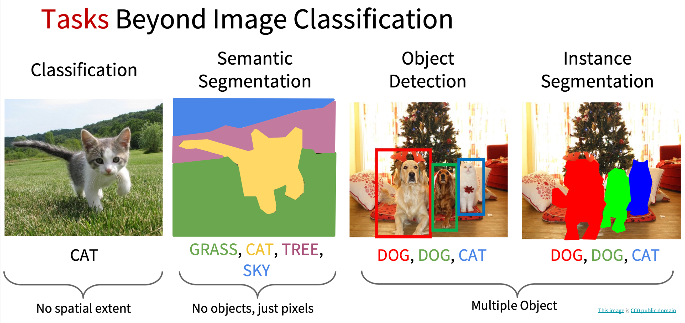
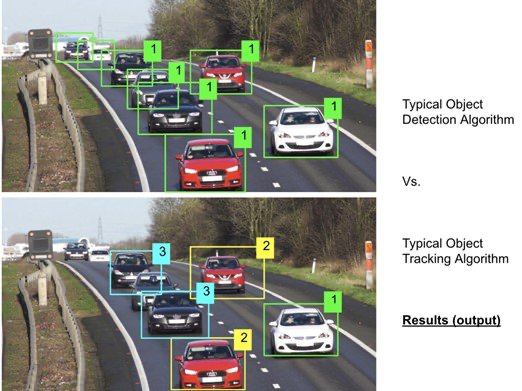
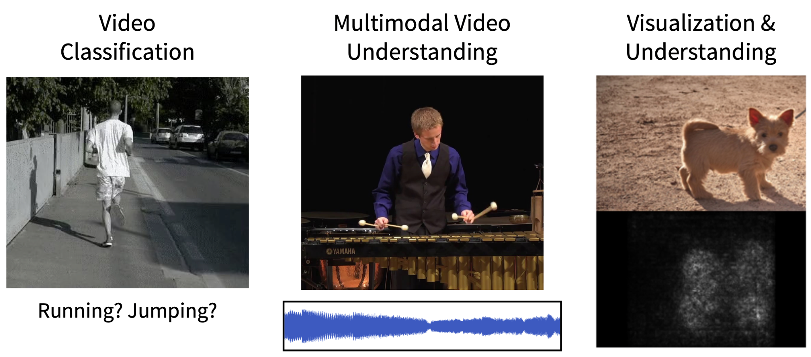
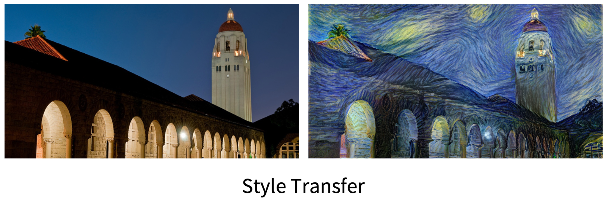
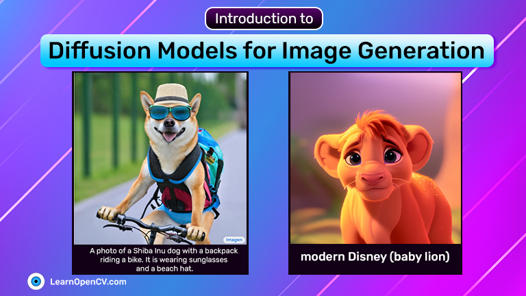
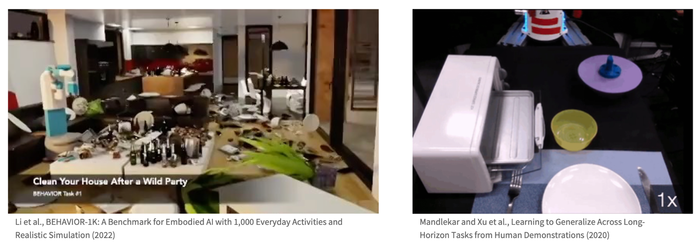
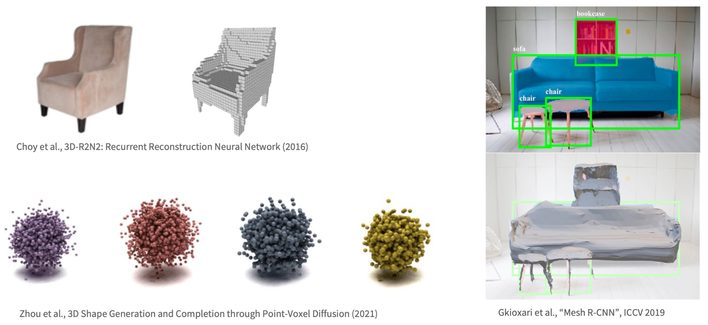

Ngữ nghĩa ảnh qua mạng nơ-ron và CNN
Trường ĐH Công nghệ · Đại học Quốc gia Hà Nội


Object detection
Object tracking



Image Generation
Image Captioning

Image Query

3D Reconstruction
Từ 2012, mọi hệ thống nhận dạng ảnh đỉnh đều dựa trên học sâu. Buổi học này xây dựng nền tảng để hiểu tại sao.
Bài 1–8 cho ta các kỹ thuật xử lý ảnh cổ điển — lọc, biến đổi, mô tả đặc trưng thủ công. Nhưng nhận dạng đối tượng vẫn là thách thức lớn.
Máy tính học nhìn như thế nào — từ ma trận số nguyên đến nhãn ngữ nghĩa?
→ Trả lời qua 4 phần: Học máy cổ điển → Mạng nơ-ron → CNN → Huấn luyện thực tế.
Sau buổi học, sinh viên có thể:
kNN · Bộ phân loại tuyến tính · Gradient descent
Ảnh đầu vào
224×224×3 = 150.528 số
Xác suất cho mỗi nhãn:
Phân loại ảnh: ánh xạ từ ma trận điểm ảnh sang phân phối xác suất trên tập nhãn.
Máy thấy mảng số nguyên 0–255. Người thấy "con mèo". Làm sao thu hẹp khoảng cách đó?
→ Cách tiếp cận: học ánh xạ từ dữ liệu, thay vì tự viết luật.
Ảnh mới thuộc nhãn nào? — Nhìn k ảnh gần nhất trong tập huấn luyện, lấy nhãn phổ biến nhất.
Hai ảnh \(I_1\) và \(I_2\) kích thước \(H \times W\):
\[d_1(I_1, I_2) = \sum_{p}\lvert I_1^p - I_2^p \rvert\]
Nhạy với sự khác biệt ở từng chiều riêng lẻ.
\[d_2(I_1, I_2) = \sqrt{\sum_{p}(I_1^p - I_2^p)^2}\]
Phạt nặng hơn các khác biệt lớn.
Chọn khoảng cách phụ thuộc bài toán — L2 phổ biến hơn trong thực tế.
→ kNN trên pixel thô không dùng được cho ảnh thực.
Học một hàm điểm \(f(x, W) = Wx + b\) — mỗi lớp có một template riêng.
\(x \in \mathbb{R}^D\): vector điểm ảnh, \(W \in \mathbb{R}^{C \times D}\): ma trận trọng số, \(b \in \mathbb{R}^C\): bias.
Kết quả: vector điểm \(s \in \mathbb{R}^C\) — \(C\) = số lớp.
Ví dụ: CIFAR-10 có 10 lớp, ảnh 32×32×3 = 3072 chiều → \(W\) có 10×3072 = 30.720 tham số.
Chuyển điểm thô thành xác suất, rồi đo độ lệch với nhãn đúng:
\[P(y=k \mid x) = \frac{e^{s_k}}{\sum_j e^{s_j}}\]
\[L_i = -\log P(y = y_i \mid x_i)\]
Khi mô hình tự tin đúng, \(L_i \to 0\). Khi sai hoặc không chắc, \(L_i\) lớn — tín hiệu để học.
Cập nhật trọng số lặp đi lặp lại:
\[W \leftarrow W - \eta \cdot \nabla_W L\]
Mini-batch: tính gradient trên tập con để nhanh hơn.
Gradient cho biết hướng tăng mất mát — đi ngược lại để giảm.
Neuron · Hàm kích hoạt · MLP · Backpropagation
Bài toán XOR — ranh giới phi tuyến = hai siêu phẳng kết hợp
\[y = f\!\left(\sum_i w_i x_i + b\right)\]
\(f(x) = \max(0, x)\)
Đơn giản, không bão hòa — phổ biến nhất.
\(f(x) = \tfrac{1}{1+e^{-x}}\)
Đầu ra [0,1] — dễ bão hòa gradient.
\(f(x) = \tanh(x)\)
Đầu ra [-1,1] — tốt hơn Sigmoid, vẫn bão hòa.
Trong thực tế: ReLU và biến thể (Leaky ReLU, GELU) là lựa chọn mặc định.
Lý thuyết xấp xỉ vạn năng: MLP 1 lớp ẩn đủ rộng có thể xấp xỉ mọi hàm liên tục.
Tính gradient theo mọi tham số bằng quy tắc dây chuyền (chain rule) từ đầu ra ngược về đầu vào.
Tính và lưu lại các giá trị trung gian \(h_1, h_2, \ldots, h_n\).
Nhân gradient dây chuyền từ sau ra trước, cập nhật từng \(W_i\).
Cho \(L = \text{loss}(f_n(\cdots f_1(x)\cdots))\):
\[\frac{\partial L}{\partial W_1} = \frac{\partial L}{\partial h_n} \cdot \frac{\partial h_n}{\partial h_{n-1}} \cdots \frac{\partial h_1}{\partial W_1}\]
Mỗi nhân tử tính một lần rồi tái sử dụng — chi phí \(O(n)\) thay vì \(O(n^2)\).
Backprop là lý do mạng nơ-ron sâu có thể huấn luyện hiệu quả.
Thị giác sinh học cũng xử lý theo tầng: V1 (cạnh) → V2/V4 (hình dạng) → IT (nhận dạng).
Tích chập · Gộp · Kiến trúc · Mạng LeNet
\[\text{out\_size} = \frac{W - K + 2P}{S} + 1\]
Kernel Sobel ngang:
Khi trượt qua ảnh: tạo ra map nổi bật vùng có thay đổi cường độ theo chiều ngang.
CNN không được lập trình cứng kernel — nó tự học các kernel hữu ích từ dữ liệu.
CNN = phần trích đặc trưng (tận dụng cấu trúc ảnh) + phần phân loại (tương tự MLP).
14 năm sau, AlexNet áp dụng ý tưởng tương tự với GPU → cách mạng học sâu.
Quá khớp · Dropout · Chuẩn hóa lô · Tăng cường dữ liệu · Học chuyển đổi
Regularization giúp dịch điểm tốt nhất sang phải — mô hình phức tạp hơn mà không quá khớp.
Mỗi bước huấn luyện, tắt ngẫu nhiên một tỉ lệ \(p\) neuron → buộc mạng học đặc trưng phân tán, không phụ thuộc vào neuron cụ thể.
Dropout tương đương huấn luyện ensemble nhiều mạng con — giảm overfit hiệu quả.
Vấn đề: Phân phối đầu vào mỗi lớp thay đổi liên tục khi trọng số cập nhật — huấn luyện không ổn định.
Chuẩn hóa đầu ra theo mini-batch:
\[\hat{x} = \frac{x - \mu_B}{\sqrt{\sigma_B^2 + \varepsilon}}\]
\[y = \gamma\hat{x} + \beta\]
\(\gamma, \beta\): tham số học được (scale & shift)
Tạo thêm dữ liệu huấn luyện bằng biến đổi ảnh — mô hình học bất biến với các biến đổi đó.
Lật ngang · Xoay · Cắt ngẫu nhiên · Co giãn
Độ sáng · Độ tương phản · Jitter màu · Grayscale
Mixup · CutMix · Random Erasing
Augmentation hiệu quả nhất khi chọn theo đặc thù bài toán — ảnh y tế khác ảnh ngoài trời.
Đây là 4 kỹ thuật không thể thiếu trong bất kỳ dự án phân loại ảnh thực tế nào.
Áp dụng kiến thức vào tình huống cụ thể.